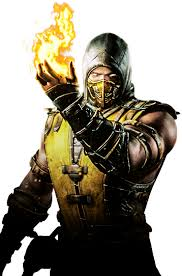
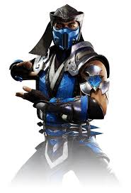
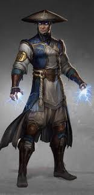
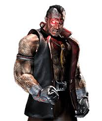
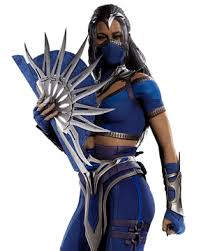
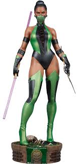
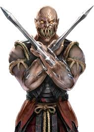
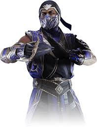
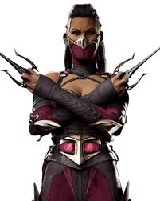
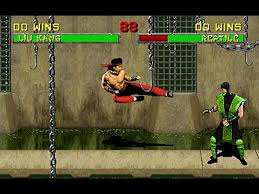

Personagens de Mortal Kombat

Liu Kang

Scorpion

Sub-Zero

Noob Saibot

Johnny Cage

Raiden

Shang Tsung

Kano

Sonya Blade

Kitana

Jade

Baraka

Rain

Kung Lao

Mileena
Liu Kang é um dos heróis mais famosos de Mortal Kombat, conhecido por suas habilidades em artes marciais e
seu poder de controlar o fogo. Ele é o principal defensor da Terra e sempre busca derrotar os vilões.
Ele é famoso por seu "Flying Kick" e o "Bicycle Kick", além de ser um dos personagens mais icônicos da série,
sendo sempre uma presença central nas histórias.


Scorpion, um dos personagens mais populares da série, é um espectro que busca vingança pela morte de sua
família e clã. Seu ataque "Spear" é um dos mais conhecidos, onde ele puxa seus inimigos para perto dele.
Ao longo dos jogos, Scorpion tem se tornado uma figura complexa, com seu próprio código moral, e muitas vezes
alternando entre herói e anti-herói, dependendo da história.


Sub-Zero é um mestre do gelo e um dos personagens mais emblemáticos da série, capaz de congelar seus inimigos
e dominá-los com seu controle sobre a temperatura. Ele é o rival e, por vezes, aliado de Scorpion.
Sub-Zero tem duas versões de seu personagem, o irmão mais velho Bi-Han e o irmão mais novo, Kuai Liang, que
continuam a luta pela honra do clã Lin Kuei.


Liu Kang é um dos heróis mais famosos de Mortal Kombat, conhecido por suas habilidades em artes marciais e
seu poder de controlar o fogo. Ele é o principal defensor da Terra e sempre busca derrotar os vilões.
Ele é famoso por seu "Flying Kick" e o "Bicycle Kick", além de ser um dos personagens mais icônicos da série,
sendo sempre uma presença central nas histórias.
Scorpion, um dos personagens mais populares da série, é um espectro que busca vingança pela morte de sua
família e clã. Seu ataque "Spear" é um dos mais conhecidos, onde ele puxa seus inimigos para perto dele.
Ao longo dos jogos, Scorpion tem se tornado uma figura complexa, com seu próprio código moral, e muitas vezes
alternando entre herói e anti-herói, dependendo da história.
Sub-Zero é um mestre do gelo e um dos personagens mais emblemáticos da série, capaz de congelar seus inimigos
e dominá-los com seu controle sobre a temperatura. Ele é o rival e, por vezes, aliado de Scorpion.
Sub-Zero tem duas versões de seu personagem, o irmão mais velho Bi-Han e o irmão mais novo, Kuai Liang, que
continuam a luta pela honra do clã Lin Kuei.
Noob Saibot, o antigo Bi-Han (Sub-Zero), se tornou um espectro e agora luta como um servo das forças do mal.
Ele usa sombras e técnicas furtivas para enganar e derrotar seus inimigos.
Originalmente, Bi-Han foi morto por Scorpion, mas seu espírito foi corrompido, tornando-o Noob Saibot, e ele
se tornou um dos vilões mais temidos na série.


Johnny Cage é um famoso ator de Hollywood e artista marcial, conhecido por seu carisma e seus golpes
imponentes. Ele tem uma personalidade extrovertida, mas também um grande senso de honra.
Seus golpes incluem o famoso "Nut Punch" e "Shadow Kick", e sua história nas séries de jogos envolve sua
busca para proteger sua família e a Terra de ameaças.


Raiden, o Deus do Trovão, é um dos guardiões da Terra e um dos personagens centrais em todas as histórias da
franquia. Ele possui o poder de controlar raios e teletransportar-se.
Raiden é frequentemente o mentor dos outros guerreiros da Terra, guiando-os nas batalhas contra forças
malignas como Shao Kahn e outros invasores de outros reinos.


Shang Tsung é um feiticeiro maligno, capaz de roubar as almas e habilidades dos inimigos. Ele tem sido um dos
principais vilões da série, sempre tentando manipular outros guerreiros para seus próprios fins.
Além de sua capacidade de transformar-se em outros personagens, Shang Tsung é conhecido por sua astúcia e por
ser uma ameaça constante aos heróis da Terra.


Kano, líder do clã Black Dragon, é um vilão implacável, usando um laser ocular e ataques brutais. Ele é uma
figura central nas conspirações malignas dentro da série Mortal Kombat.
Apesar de sua natureza criminosa, Kano é um personagem com muitas camadas, e sua rivalidade com Jax e Sonya
Blade é uma parte importante de sua história.


Sonya Blade é uma soldado de elite das Forças Especiais, conhecida por sua determinação e habilidades em
combate. Ela é uma das personagens mais fortes da série e tem sido uma figura central nas batalhas contra as
forças de Shao Kahn.
Sonya é famosa pelo seu "Leg Grab" e outros ataques rápidos, e sua luta sempre foi focada em proteger a Terra
e sua família das forças do mal.


Kitana, princesa de Edenia, é uma guerreira habilidosa e uma das personagens mais emblemáticas da série. Ela
é filha adotiva de Shao Kahn, mas sempre se rebelou contra ele e suas forças, buscando justiça para seu
reino.
Kitana é conhecida por suas lâminas, que ela usa com grande habilidade, e sua história é uma das mais
trágicas e complexas da franquia Mortal Kombat.


Jade, amiga leal de Kitana, é uma guerreira especialista em combate com bastões e em técnicas de camuflagem.
Ela usa suas habilidades em combate para proteger sua terra natal, Edenia, e para proteger seus amigos
contra os inimigos.
Ela é uma das lutadoras mais habilidosas e ágeis da série, conhecida por sua capacidade de se mover
rapidamente e por sua precisão mortal nas batalhas.


Baraka é um dos principais guerreiros Tarkatan e um dos personagens mais brutais e sanguinários da série. Ele
é um aliado de Shao Kahn e luta com lâminas nas mãos que ele usa para cortar seus inimigos.
Baraka é conhecido por sua fúria incontrolável e por sua busca constante por sangue, sendo uma ameaça temível
para qualquer guerreiro que enfrente-o no combate.


Rain é um guerreiro de Edenia com a habilidade de controlar a água. Ele é conhecido por suas habilidades
místicas e pela sua habilidade de lançar ataques de água devastadores durante as lutas.
A história de Rain é envolta em mistério, sendo muitas vezes confundido com um aliado ou inimigo devido à sua
lealdade instável.


Kung Lao é um monge shaolin e amigo de Liu Kang, conhecido por seu chapéu afiado como arma letal. Ele é um
habilidoso lutador que busca honrar sua linhagem e proteger Earthrealm.
Seus golpes incluem o "Hat Throw" e o "Teleport", tornando-o um adversário ágil e perigoso em combate.


Mileena é uma clone mutante de Kitana, criada por Shang Tsung e combinando a graça de uma princesa com a
selvageria dos Tarkatans. Ela é uma das personagens mais letais da série.
Seus golpes icônicos incluem ataques ferozes com suas Sai e sua mordida mortal, evidenciando sua natureza
predatória.